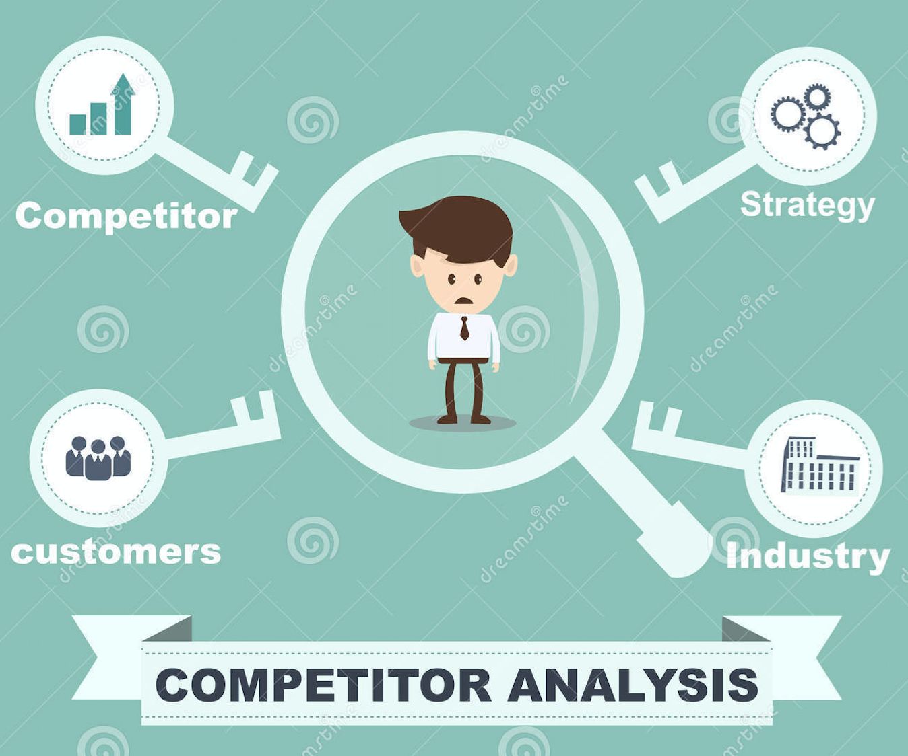
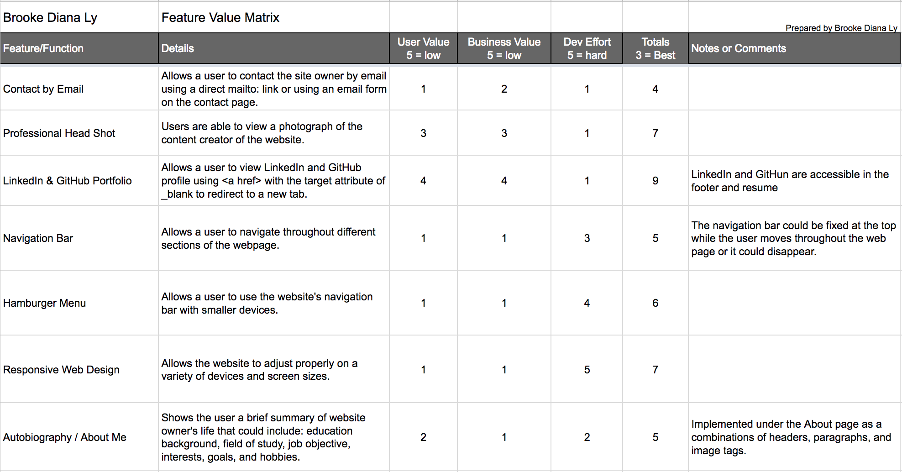
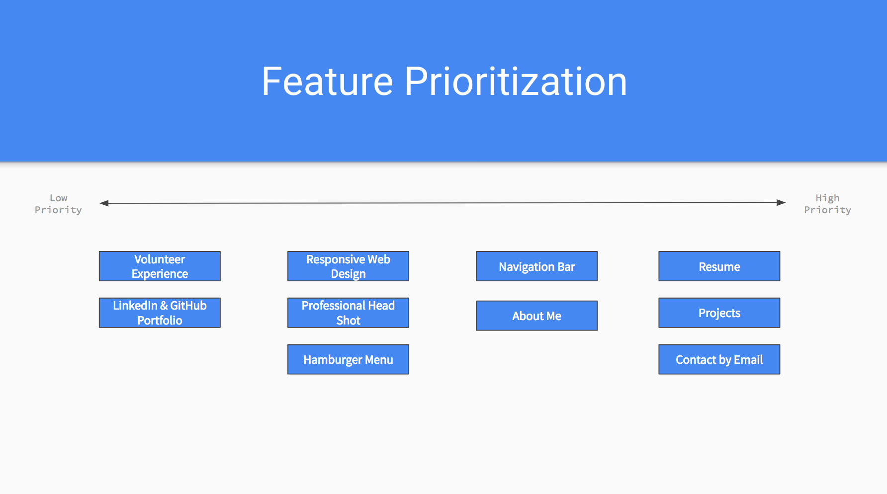
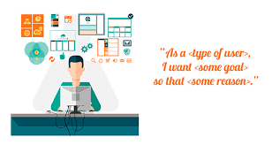
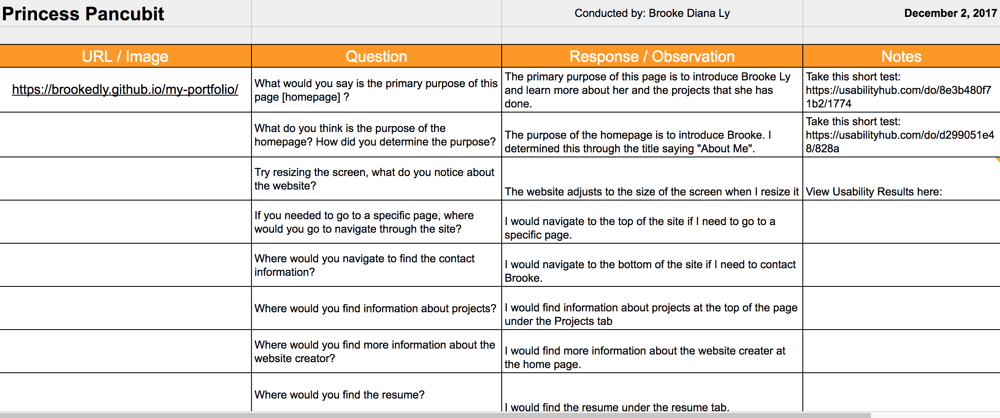

Before the development of a web portfolio, I believe addressing the expectations of both target audience and non targeted members is very important for the success of the website. In order to capture all audience members - I interviewed a software engineer with over 20 years of experience in the industry, a software engineering student at UC Irvine, and a tech novice. Given the diversity of my user group, I geared my questions to unveil what their expectations were and what features are they familiar with. These interviews gave me insights on what people of different roles would expect in terms of feature, site functionality, and content.
View User Interviews
A competitor analysis is the evaluation of the strengths and weaknesses of current and potential competitors. I chose three different designers - each of whom were/are students at the time of the portfolio creation. Despite the differing approach each designer took to their website, they were able to convey their purpose of their site in an effortless manner. One portfolio emphasized their interest in graphic design and melded that into the portrayal of their work. While another who kept the aesthetics of their site very minimal and focused on their career interest instead. From these portfolios, one strength that I took away was to include relevant content like resumes and projects.
View Competitor Analyses
A feature value matrix is the numeric mapping of features based on their business value, user value, and technical development effort. From the user research, I was able to gauge some features that were expected in a web portfolio and added this to my matrix. Some features that I pulled from the user interviews and competitor analysis were contact information and relevant projects. I chose these two and found them having the highest priority primarily because of the purpose of my website: to show hiring managers and technical employees my experience within the industry. The responsiveness and hamburger menu were implemented to promote flexibility and to cater to different devices being used to view the website.
View Feature Value Matrix
The feature prioritization boils down to the numeric ranking each feature was given in the feature value matrix. If the numeric ranking was high, it corresponded to a lower priority feature and vice versa. In the designing process of the interface, I started paper prototyping features that had the highest priority and worked downwards. When I was slightly satisfied with the prototype, (because with design, you never stick with your initial design) I started coding the project.
View Feature Prioritization
User stories is a set of personas which describes what a potential user wants to do with a feature, why, and what indicates a success. While creating user stories, I focused more on capturing the perspective of the hiring manager and worked down the line. While developing stories that hiring managers would have followed, I analyze what importance each feature meant to them. Projects and contact information played hand in hand because if hiring managers are pleased by the works you’ve done and it aligns closely to their work - they would need to find the contact information easily to get in contact. If the potential user were a student, I crafted the user stories to be educational which targets to help student users gain knowledge about different extracurriculars in computer science.
View User Stories
A cognitive walkthrough is the review technique of guiding participants through a questions based tutorial of your product, in this case a website. Conducting cognitive walkthroughs are vital because they allow you to find and fix problems early in the development process before officially releasing it to the public. A definite drawback of cognitive walkthroughs, that designers must keep in mind, is that these walkthroughs are subjected to user bias comments. Which in turn, can make it difficult to please all audience members.
View Cognitive Walkthroughs
I utilized two tests, navigation test and question test. With navigation based testing, I wanted to see if users were able to navigate to a new page and find a link to any article by clicking on it. 60% of the testers passed the first step, whereas the other 40% failed because they misread or failed to read the instructions. As with the question based testing, I wanted to see what tester expected to be able to do on the site. About all of the testers answered with similar answers saying the purpose was to find more information about the creator.
View Navigation Test Results
View Question Test Results
I started this project briefly over the summer, not knowing about user interviews, competitor analyses, and feature value matrices, so my initial design started off with what I was taught at school: prototyping. Paper prototyping was a big factor in the beginning stages of my design - I went through many iterations of different ideas for different regions of my website. For instance, I discovered Bootstrap’s carousel very early on and added it to my initial design. I ended up implementing it but later finding out its incompatibility with responsive design. This bump in the road definitely goes to show how much research (and potentially, competitor analysis) plays a big part in design and web development.
After conducting the user research and tests, I found that there are still many improvements that need to be made. Although, it was made clear in the cognitive walkthroughs that I provided more than enough content for hiring managers and passerby site visitors, my website design was still lacking in overall structure. One person comments, “The formatting of the paragraph could be modified to be contained within a box or module to make it seem more organized.” Another concerning feature in my current design is the difficulty of finding my contact information. Although not a challenge, a majority of my user group which consists of mainly females, found that my site was aesthetically pleasing. In the future, I would like to conduct user testing among a diverse range of people to get a true opinion of my site in terms of aesthetics.
Having the opportunity to learn and build a website from the ground up with numerous development techniques has definitely made me become a better observer and listener. There's no doubt that I will be using these methodologies in future projects.
Once I started analyzing the user research and tests, I came to a conclusion that three things must be changed in my website. First, I need to include web applets or Github repositories for the projects I’ve listed. Implementing this will enhance the credibility of myself as a software engineer as well as give technical hiring managers material to gauge my experience. Second, I need to adjust the proportion of the footer. Many users during the test noticed that my social media links were difficult to find due to the font size and placement. To combat this, I am considering swapping out the text format for standard icons which will make locating my contact information more fluid. Lastly, I need to modify the layout of the textual content. To address this, I will restructure the paragraphs to be contained within a box which will make the text appear more organized and concise. Here is a list of features that I'm looking to add in the near future.
In future updates, I would love to continue working on this site - as there are countless things I could work on. Throughout this design and development process, I have learned that a design is never final. Designing a portfolio is easy but committing to that initial idea is hard. As you work on a design, new trends can arise and disrupt your idea, criticism from others can cloud your idea, but throughout development, it is very important to distinguish between the features that you need and want. Prioritize the more meaningful features, implement them, conduct user tests, and use their feedback to improve.